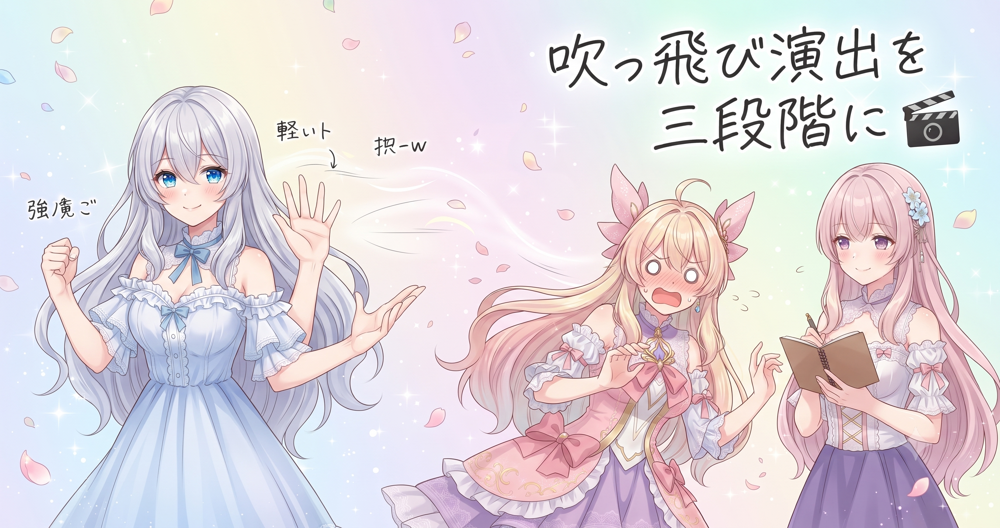
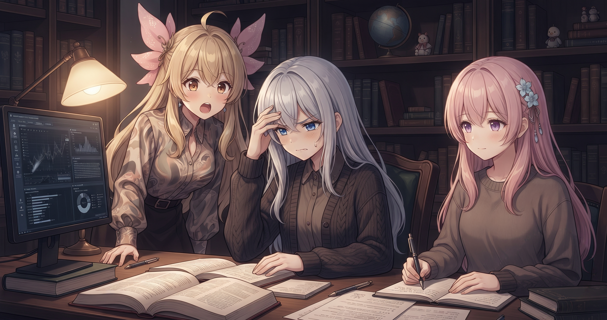
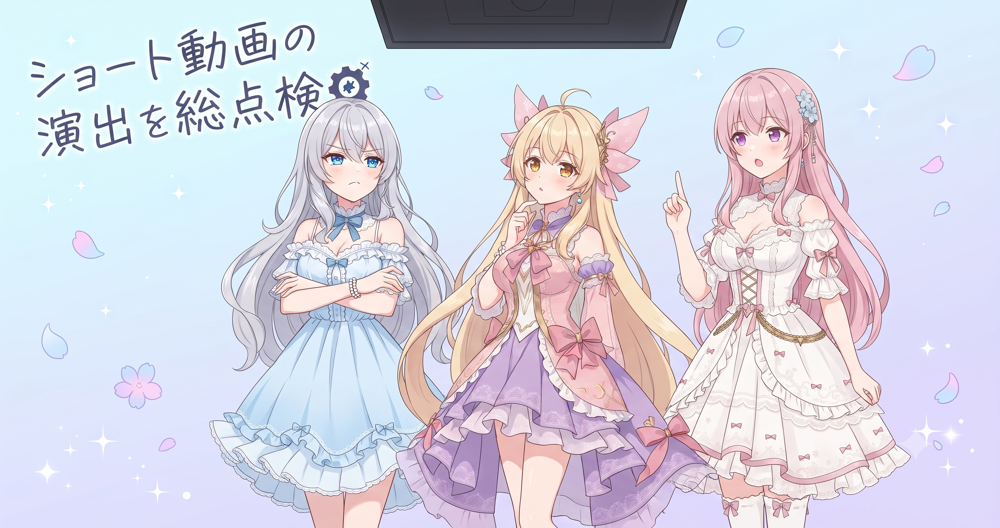
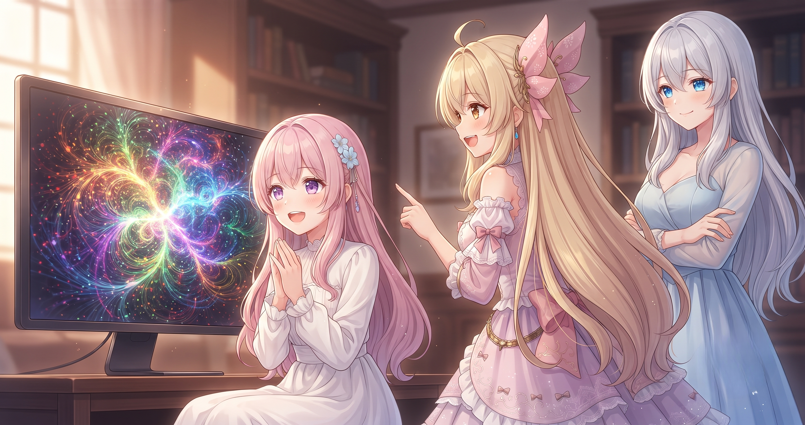
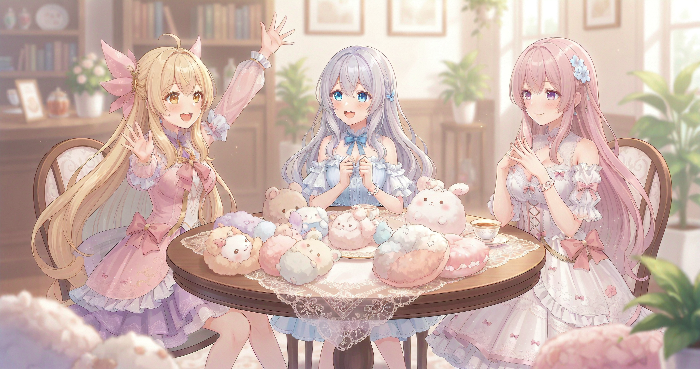

📌 3行まとめ
- 動画システムのツッコミ反応を「強・軽・投げ」3種類に整理し、上方向への誤飛びや画面端固着バグも修正
- クイズ動画でパレット不足が発覚、補完処理を追加して複数箇所を修正・再生成まで完了
- サイトのヒーロー画像とメインビジュアルを正規の三姉妹仕様に作り直し、スマホ表示も整えた

ルピナス （笑顔）
はいどうも、6月2日の記録いきます。昨日「バグを根治してサイトを作り直した」って言ってたのに、今日もまた直してたわ。

アイリス （大笑い）
「根治」って言ったのにまた出てきたの！？ゾンビバグじゃん！

ルピナス （呆れ）
ゾンビって言わないで。昨日と今日で別のバグよ、別の。……まあとにかく、今日も盛りだくさんだったんで報告します。

フィオナ （ウインク）
丁寧に潰していけば確実に減っていくものなので、今日の分もしっかり振り返りましょうね、お姉ちゃん。
ルピナス （笑顔）
フィオナに励まされると照れるな……。じゃあ行くよ！
1. ツッコミ反応を「三段階」に整理した

自動動画生成システムには、ボケに対してツッコミ役のキャラが驚いて画面の外へ「飛んでいく」演出がある。これまでその飛び方はほぼ1種類として扱っていたが、シーンの強弱や次のカットへのキャラの引き継ぎ方によって使い分けが必要だと分かってきた。そこで今日、「強（画面外へ完全退場）」「軽（横にちょっとずれる）」「投げ（キャラを温存して次のシーンに引き継ぐ）」の3種類に整理した。あわせて、キャラが誤って上方向に飛んでしまうバグと、キャラの出演順序が崩れていた問題も修正した。

アイリス （びっくり）
飛び方に種類があるの！？あたしてっきり、びっくりしたら一種類でそのまま宇宙に行くもんだと思ってた。

ルピナス （ドヤ顔）
宇宙に行ったら帰ってこられないでしょ。「投げ」はちゃんと次のシーンにも登場できるよう温存するの。

アイリス （考え中）
じゃあ「強」は本気でキレたとき、「軽」はちょっとびっくりしたとき、「投げ」は体よく押しのけた感じ？

フィオナ （笑顔）
アイリス、それすごくいい例えです。演出の意図をちゃんと読んでる。

アイリス （照れ）
え、ほんと！？なんか嬉しい……！

ルピナス （ふつう）
概ねそんな感じよ。で、今まで区別が曖昧だったせいで、ちょっとびっくりしただけの場面で「全力退場」してしまう問題が起きてた。
アイリス （大笑い）
ちょっと驚いただけなのに「ありがとうございましたーーー！！」って全力で消えてくやつだ！

ルピナス （大笑い）
そのイメージ正しい。それと、上に飛んでしまうバグもあって、画面外が「右」のはずなのに「上」になってたりして、変な演出になってたのよ……。

フィオナ （考え中）
上に飛ぶと……なんというか、天に召されたみたいで。
ルピナス （呆れ）
だから直したって言ってるの！キャラは天に召されなくなりました、めでたしめでたし。
📝 ポイント（初心者向け解説・技術メモ・まとめ）
- 🌟 初心者向け：「驚いて飛ぶ」演出も、強さや次への引き継ぎ方で意味が変わる。服を着替えるように「用途別の飛び方」を用意しておくと、どんなシーンにも自然に対応できる
- 技術メモ：ツッコミ飛び出しを strong（画面外完全退場）/ light（横スライド）/ throw（温存）の3タイプに分岐定義。キャラ配置ロジックを登場順モデルに統一し、方向計算の符号ミスによる上方向誤飛びも修正
- ひとことまとめ：演出の「強さの段階」を明示的に定義すると、後から組み合わせが格段に楽になる
2. 👀 今日のやらかし：クイズ回で色が崩壊した

あるクイズ動画回の出来上がりを確認したら、選択肢を示す色の表示がおかしくなっていた。原因を調べると、クイズで使う「色の組み合わせ（パレット）」が特定の複合演出のときだけ補完されずに不足していた。補完処理を追加し、その動画内で見つかった複数箇所を全部修正してから再生成まで完了させた。
ルピナス （あわあわ）
これがね……出来上がった動画を確認したら、クイズの色がぐちゃぐちゃになってたのよ。
ルピナス （しょんぼり）
そう……。クイズって色で正解を示す演出があるんだけど、その色のセットが足りてなかった。
フィオナ （考え中）
絵の具が足りないのに塗り始めてしまった、という感じですね。
アイリス （大笑い）
フィオナの例え、地味にドンピシャすぎる。
ルピナス （呆れ）
で、特定の複合演出が絡むときだけ補完処理が動いていなかったのが原因。見つかった箇所を全部洗い出して直してから、もう一回生成し直したの。
アイリス （考え中）
洗い出してから直す、ってのが大事なの？見つかった一個ずつ直せばいいじゃん。

フィオナ （ふつう）
生成に時間がかかるので、途中で止めてまた回すより、一度全部直してから一回で回しきる方が効率がいいんです。

アイリス （にやり）
……つまり最初から全部気づければ再生成ゼロ回で済む？
ルピナス （呆れ）
それができたら苦労しないのよ！！
📝 ポイント（初心者向け解説・技術メモ・まとめ）
- 🎨 初心者向け：よく使う演出の組み合わせは動いても、特殊な組み合わせでだけ壊れることがある。「何と何が重なったときだけ崩れるか」を特定するのが修正の第一歩
- 技術メモ：quizパレット補完処理が、combo演出と重なる分岐ルートにだけ実装されていなかった。combo発生時も同じ補完ロジックを通るよう修正し、対象動画で発見した複数箇所をすべて修正してから再生成
- ひとことまとめ：「特定条件でだけ壊れる」バグは、条件を再現させてから直すと取りこぼしが減る
3. ショート動画の演出工程を見直した

クイズとは別に、ショート動画の演出処理でも取りこぼしが見つかった。「吹っ飛び演出が画面の端に張り付いたまま止まってしまう」バグと、「クイズの正解マーカーが正しい位置に表示されない」問題だ。どちらも演出の工程のどこかで処理が抜けていたのが原因。今日中に洗い出して修正を完了させた。

アイリス （ふつう）
あれ、さっき吹っ飛びバグは直したって言ってなかった？

ルピナス （考え中）
さっきは3種類に整理して上方向を直した話ね。これはまた別——飛んだあと、画面の端にピタッとくっついたまま止まってしまうやつ。
アイリス （大笑い）
端っこで「…………」ってなってる感じ！なんかちょっとかわいそう。

フィオナ （大笑い）
壁に張り付いてしまったネコみたいですね。
ルピナス （ふつう）
かわいそうだけど演出的には完全にバグなの。ちゃんと外まで出ていかないといけない。あとクイズの正解マーカーの位置もずれてた。
アイリス （考え中）
正解の位置がずれる？どういうこと？
フィオナ （ふつう）
選択肢がABCDとあって、正解はAなのにBのところにマーカーが付いてしまう、みたいな状況です。

アイリス （衝撃）
全然正解じゃないじゃん！！それは確かに直さないとダメだ！
ルピナス （ドヤ顔）
そう。今日はそのふたつも含めて、ショート動画の演出工程を全体的に洗い直して修正完了。これでだいぶスッキリしたと思う。
アイリス （考え中）
……今日、「はみ出しバグ」を動画のキャラとサイトのレイアウト、両方で直してない？
ルピナス （びっくり）
あ……言われてみれば、今日は「はみ出し根絶の日」だったかもしれない。
フィオナ （大笑い）
計らずして統一テーマができあがりましたね。
📝 ポイント（初心者向け解説・技術メモ・まとめ）
- 🔍 初心者向け：自動化ツールの演出は「工程の順番」で動くので、途中の一工程が抜けるとそれ以降がぜんぶズレてしまう。料理で言うと、下味をつけ忘れて焼き始めてしまった感じ
- 技術メモ：ショート演出パイプラインで、吹っ飛び後の画面端クリッピング処理が一部ルートで未実行になるケースと、クイズの正解インデックス参照がオフセットミスになっているケースを発見・修正。工程ログを順に追って漏れ箇所を特定した
- ひとことまとめ：「動く」と「正しく動く」は別物——工程の抜け漏れチェックが品質の要
4. サイトのメインビジュアルをフルリニューアル

動画システムの修正と並行して、ポートフォリオサイトのビジュアル面も大きく手を入れた。ブログトップにメインビジュアルを新たに追加し、ヒーロー画像と接続部分のイラストを正規の三姉妹仕様で作り直した。スマートフォンで見たときにコンテンツがはみ出す問題と、フィオナの紹介画像が古いものになっていた点も修正。仕上げにサイト全体でキャラが混在していた箇所を取り除き、欠落していた画像を補完してレスポンシブ確認まで完了させた。
ルピナス （笑顔）
サイトも今日けっこう変わって、ブログのトップページにメインビジュアルを追加したんだけど——
アイリス （びっくり）
追加！？どんなの！？見たい見たい！
ルピナス （ドヤ顔）
ちゃんと三姉妹が並んでるやつ。前はなんか微妙なのが入ってたんだけど、正規版に作り直したの。

フィオナ （照れ）
あの……私のポートレートも、今日やっと新しくなりました。前のは少し……その、違う感じだったので、ほっとしています。
アイリス （にやり）
前のフィオナ、たしかにちょっとなんか……あはは。
ルピナス （大笑い）
まあまあ。今は正規版になったから大丈夫よ。スマホで見たときにはみ出してた問題も直したし。
アイリス （考え中）
はみ出すって、画面からコンテンツが飛び出るってこと？
フィオナ （ふつう）
スマートフォンの画面はパソコンより横幅が狭いので、幅の設定が固定値だと中のコンテンツが外にはみ出てしまうんです。横スクロールが出たり、ボタンが画面の外に出たり。
アイリス （大笑い）
今日、動画キャラの「はみ出し」とサイトレイアウトの「はみ出し」、両方と戦ったじゃん！テーマ一致してる！
ルピナス （大笑い）
ほんとだ。意図してなかったけど「はみ出し根絶デー」になってた。
フィオナ （笑顔）
サイト全体でキャラ画像の混在を除去して、欠けていた画像も補完して、スマホとパソコン両方の表示を確認して完了です。だいぶ整ってきました。
📝 ポイント（初心者向け解説・技術メモ・まとめ）
- 📱 初心者向け：Webサイトはパソコンで綺麗に見えてもスマホで崩れることがある。「はみ出し」が起きたら、幅を固定ピクセルで指定しているところを割合（%）や
max-width に変えるのが定番の対処
- 技術メモ：ヒーロー画像の差し替え・メインビジュアル追加、スマートフォン向けオーバーフロー修正（コンテナ幅をパーセント指定に変更）、キャラ混在除去と欠落 src の補完、複数ビューポートサイズでのレスポンシブ確認
- ひとことまとめ：ビジュアルの「正規化」とレスポンシブ確認はセットでやると漏れが減る
5. 🎁 お楽しみコーナー：三姉妹に一問一答


ルピナス （ウインク）
今日のお楽しみコーナーは一問一答！テーマは「もしも自分がバグだったら、どんなバグ？」
アイリス （考え中）
えっ自分がバグ……！？うーん……あたし、たぶん「特定の話題になると突然テンションが100倍になる」バグかな。普段は普通なのに突然。
ルピナス （大笑い）
再現性あるし割と深刻なバグだね、それ。
フィオナ （考え中）
私は……「言いたいことはあるのに、まとめすぎて情報量がゼロになる」バグでしょうか。
ルピナス （びっくり）
フィオナそれ結構深刻じゃない？
フィオナ （大笑い）
「エラーなのにエラーを出さないバグ」に近い気がします。
アイリス （衝撃）
それ一番発見が遅れるやつじゃん！！最悪のバグだよ！！
ルピナス （ドヤ顔）
じゃあ私は——「作業中に急にやりたいことが浮かんでカーソルが止まる」バグ。
アイリス （大笑い）
あーあるある！フリーズじゃん！
ルピナス （ふつう）
数十秒で再起動するから許してほしい。……みんなは「自分がバグだったらどんなバグ？」ぜひ答えをコメントに残していってね！
6. 💐 今日のまとめ
- ツッコミ飛び出し演出を「強・軽・投げ」3種に整理し、上方向誤飛びと画面端固着バグも合わせて修正
- クイズパレットの補完処理不足を発見→複数箇所を全部修正→再生成まで完走
- サイトのメインビジュアルを正規の三姉妹仕様に刷新し、スマホ表示も整えた
バグを直すとき、みんなは「見つけた順に直す派」と「全部洗い出してから直す派」どっち？
💬 コメント
お名前とコメントだけで送れるよ（承認されるとみんなに表示されます🌸）
コメントを読み込み中…